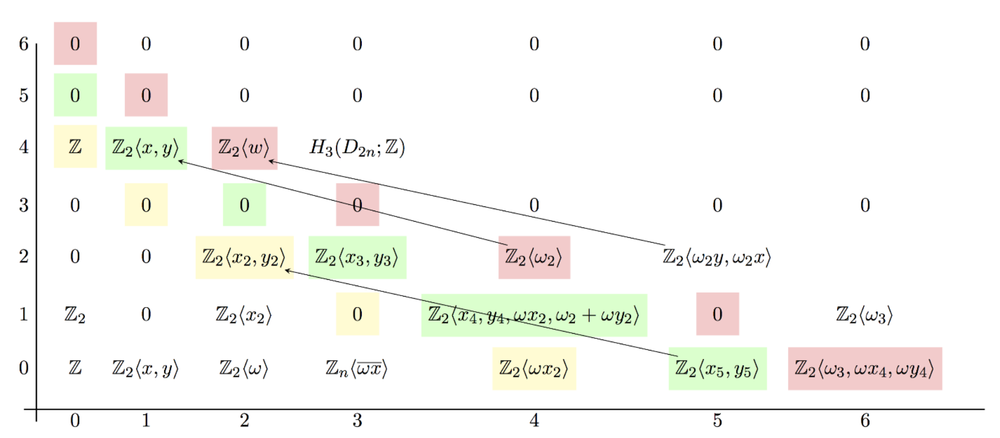

Seidel's exact triangle and sections of 4-dimensional Lefschetz fibrations. (Work in progress - joint with T. Perutz)
We are working towards a formula that gives some lowerbound on the number of pseudo-holomorphic sections of a Lefschetz fibration over the disk, while keeping track of their relative homology class. To achieve this, we developed a particular local coefficient system and gave a fully explicit and geometric proof of the exactness of Seidel's triangle in Lagrangian and Fixed Point Floer homology.
Fixed point Floer cohomology of disjoint Dehn twists on a w+-monotone manifold with rational symplectic form
Journal of Symplectic Geometry 2024 vol 22 issue #3. arXiv.
I gave an explicit description of the Floer cohomology of a family of Dehn twists about disjoint Lagrangian spheres in a weakly+-monotone rational symplectic manifold. This is a generalization of a classic result by P. Seidel from 1996 and it is based on a neck-stretching argument and some delicate reasoning with an energy filtration for \(CF(\tau_V)\) which show that certain "bad trajectories" do not count towards the differentials for \(CF(\tau_V)\), proving that the chain complex can be naturally identified with the one for Morse relative cohomology of \((M,V)\).
 A "bad trajectory" that goes through the Lagrangian \(V\). These are the obstruction for having \(HF(\tau_V)\cong H(M,V)\)
A "bad trajectory" that goes through the Lagrangian \(V\). These are the obstruction for having \(HF(\tau_V)\cong H(M,V)\)
Stable classification of four-manifolds with fundamental group D2n
This is my master thesis project, where I (almost) completely classified four-manifold with prescribed fundamental group up to stable diffeomorphism. As a corollary I got some restriction on the divisibility of the signature of such manifolds under some additional assumptions. A. Debray communicated me he was able to figure out the classification in the missing case.

One of the many Atiyah-Hirzebruch spectral sequences I studied in my master thesis.